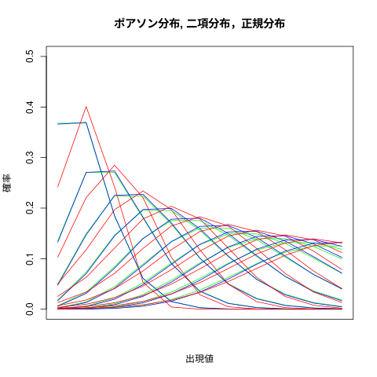

入門統計学 2章 確率と統計
#+beign_src R :tangle R-text/code/02.R
2.1 サイコロ と 一様分布
一様分布
## 入門統計学2章1節 ## 1~6 までの一様分布の確率値の計算 (dice <- dunif(1:6, min=1,max=7))
[1] 0.1666667 0.1666667 0.1666667 0.1666667 0.1666667 0.1666667
plot(1:6, dice, main="1~6の一様分布")
一様分布の和の分布
## ## * 1~6の一様分布の和の分布の確率値の計算 ## dice2 <- rep(0,12) ## 確率値保存用ベクトルの生成 for (i in 1:6) { for (j in 1:6) { # dice2[i+j] <- dice2[i+j] + dice[i]*dice[j] } } dice2
[1] 0.00000000 0.02777778 0.05555556 0.08333333 0.11111111 0.13888889 [7] 0.16666667 0.13888889 0.11111111 0.08333333 0.05555556 0.02777778
## ## 1~6の一様分布の和の分布のヒストグラム ## plot(1:12, dice2, main="1~6の一様分布の和の分布")

2.2 二項分布
\( n \) 回のコイン投げ試行で，\( x \) 回表のでる確率は,
\( P(X=x) = n C_x p^x (1-p)^{(n-x)} \) となる。
\( x=0 \) から \( x=n \) までの確率を表わす確率分布を 二項分布と呼び，\( B(n, p) \) と表わす。
Rでは binom(size=n, prob=p).
二項分布が確率関数に従うことを，
\( B(n, p) \) \( \sim n C_x p^x (1-p)^{(n-x)} \)
と表わす。
\( B(n, p) \) の平均は \(n p\), 分散は \(np(1-p)\)。
## 入門統計学2章1節 ## dbinom(x, size, prob) ## 二項分布 nCx p^x (1-p)^(n-x) の計算 dbinom(c(0,1,2,3,4),3,1/3) ## plot(x,y) plot(c(0, 1,2,3,4), dbinom(c(0,1,2,3,4),3,1/3),type="h") ## B(n,p) ~ N(np, np(1-p))
[1] 0.29629630 0.44444444 0.22222222 0.03703704 0.00000000
2.3 正規分布
平均 \( \mu \), 分散 \( \sigma^2 \) の正規分布 を \( N(\mu, \sigma^2) \) と表わす。
R では norm(mean=\( \mu \), sd=\( \sigma \)).
確率密度関数
\( N(\mu,\sigma^2) \) \( \sim \) \( \frac{1}{\sqrt{2\pi\sigma^2}} e^{-\frac{1}{2}\left({\frac{x-\mu}{\sigma}\right)^2 \)
正規分布と二項分布の対応
正規分布は，二項分布 \( B(n,p) \)で \( n \) が大きいときの近似とな る。その対応は，\( \mu = n p \), \( \sigma^2 = n p (1-p) \) となる。
- 二項分布は正確な確率が計算できる式であるが，大きな桁の整数計算が必 要であるが，結果に求められる精度は少なくてよい。
- 正規分布は近似計算であり，正確ではないが，不動小数を用いた計算によ り，結果に求められる精度で計算することが可能となる。
標準化
\( N(\mu, \sigma^2\) \) を \( N(0, 1) \) に変換するには，
標準化 \( z = \frac{(x - \mu)}{\sigma} \) することで，
標準正規分布 \( N(0,1) \sim \frac{1}{\sqrt{2\pi}} e^{-\frac{z^2}{2}} \) となる。
例題：正規分布の確率計算
## 入門統計学2章1節 ## dnorm(x, mean=, sd=) x での確率密度 ## norm(x, mean=, sd=) 0..x までの確率 # dnorm dnorm(c(0,1,2,3,4),mean=1,sd=sqrt(2/3)) plot(dnorm(c(0,1,2,3,4),mean=1,sd=sqrt(2/3))) # pnorm pnorm(44, mean=40, sd=2)
[1] 0.2307994842 0.4886025119 0.2307994842 0.0243260867 0.0005720947 [1] 0.9772499
s-課題-1:
(1) コイン投げで表が出る確率が1/2の時，1万回投げたとき x 回表のでる 確率分布を，Rを用いて表示してください。 (2) 上記の2項分布を，正規分布で近似し，二項分布と正規分布のグラフを Rを用いて重ね描きしてください。
# # 2章のs-課題-1 # ### dbinom(x,n,p) ### dnorm(x,mean=np, sd=sqrt(np(1-p))) plot(4800:5200, dbinom(4800:5200,10000,1/2),col="blue",type="h"); # plot(4800:5200, dnorm(4800:5200,mean=5000,sd=50),xlim=c(4800,5200),col="red", type="p") curve (dnorm(x,mean=5000,sd=50),from=4800,to=5200,col="red",add=T)
2.4 標準化と偏差値 例題
標準化 \( z = \frac{(x - \mu)}{\sigma} \)
2.5 ポアソン分布
R では，pois(lambda=頻度)
\( n \)回の試行の二項分布 \( B(n, p) \)で，\( p \) が非常に小さい場合を考える。 \( p \) は一定であるので，\( n \)回での期待値は \(np\) となり， \( 2n \) 回での期待値は，\( 2np \) となる。
極小な \( p \) に対して \( np \) がほどよい大きさの数になるような \( n \) を基準回数 (基準時間) と考え，\( \lambda = n p \) を基準回 数でおこる事象の 頻度 と呼ぶ。
- \( 10^6 \) 回に3回起こるは，頻度 \( \lambda = 3 \) (回/10^6回)
- \( 10 \)年に3回起こる， 頻度 \( \lambda = 0.3 \) (回/1年)
頻度 \( \lambda \) のポアソン分布を，\( Po (\lambda) \) と表わす。 R では，pois(lambda=頻度) と表わす。
二項分布とポアソン分布の対応
Po(\(\lambda\))とB(n,p)の間には，平均: \( \lambda = np \), 分散: \(np(1-p) = \lambda \)，となっている。
ポアソン分布の表示
x <- 0:10 plot(0,0, xlim=c(0,10), ylim=c(0,0.5), type="l", main="ポアソン分布", ylab="確率", xlab="出現値",xaxt="n") for (lamb in c(1,2,3,4,5,6,7,8,9,10)) { points(x, dpois(x, lamb), type="l", col="green") }
ポアソン分布，二項分布，正規分布
s-課題
3つの確率分布を同時に描いてみよう:
## ## ポアソン分布，二項分布，正規分布 ## x <- 0:10 plot(0,0, xlim=c(0,10), ylim=c(0,0.5), type="l", main="ポアソン分布,二項分布，正規分布", ylab="確率", xlab="出現値",xaxt="n") for (lamb in c(1,2,3,4,5,6,7,8,9,10)) { points(x, dpois(x, lamb), type="l", col="green") points(x, dbinom(x, 100, lamb/100), type="l", col="blue") points(x, dnorm(x, mean=lamb, sd=sqrt(100*lamb/100*(1-lamb/100))),type="l", col="red") }

#+beign_src R :tangle R-text/code/02.R ,#+end_src #+end_src
例題: 胡瓜収穫量の標準化
胡瓜収穫量データの読み込み
http://wiki.cis.iwate-u.ac.jp/~suzuki/bio_stat/org/R-text/data/01-02.csv
上記のデータをダウンロードし，データの読み込み先を，自分の環境に あわせてください
(csv.1.2 <- read.csv("R-text/data/01-02.csv")) # class(csv.1.2) # (csv.1.2[,1:2]) # class(csv.1.2[,1:2])
ポット番号 栽培法A 栽培法B
1 1 3063 3157
2 2 2275 2707
3 3 2089 3270
4 4 2855 3181
5 5 2836 3633
6 6 3219 3404
7 7 2817 2219
8 8 2136 2730
9 9 2540 3408
10 10 2263 3203
11 11 2140 2938
12 12 1757 3286
13 13 2499 2920
14 14 2093 3332
15 15 2073 3478
行列化
(mat.1.2 <- matrix(as.matrix(csv.1.2[,2:3]), nrow(csv.1.2), ncol(csv.1.2)-1))
class(mat.1.2)
[,1] [,2]
[1,] 3063 3157
[2,] 2275 2707
[3,] 2089 3270
[4,] 2855 3181
[5,] 2836 3633
[6,] 3219 3404
[7,] 2817 2219
[8,] 2136 2730
[9,] 2540 3408
[10,] 2263 3203
[11,] 2140 2938
[12,] 1757 3286
[13,] 2499 2920
[14,] 2093 3332
[15,] 2073 3478
[1] "matrix"
(z1 <- (mat.1.2[,1] - mean(mat.1.2[,1]))/sqrt(var(mat.1.2[,1]))) (z2 <- (mat.1.2[,2] - mean(mat.1.2[,2]))/sqrt(var(mat.1.2[,2])))
[1] 1.4468709 -0.3940348 -0.8285633 0.9609465 0.9165592 1.8113141 [7] 0.8721719 -0.7187631 0.2250515 -0.4220689 -0.7094184 -1.6041733 [13] 0.1292683 -0.8192186 -0.8659421 [1] 0.08921788 -1.14231733 0.39847006 0.15489976 1.39190846 0.76519388 [7] -2.47784884 -1.07937219 0.77614086 0.21510815 -0.51012925 0.44225798 [13] -0.55939066 0.56814824 0.96771300
c("z1 (mean, var,sd): ", mean(z1), var(z1), sqrt(var(z1))) c("z2 (mean, var,sd): ", mean(z2), var(z2), sqrt(var(z2)))
[1] "z1 (mean, var,sd): " "3.49727480771408e-16" "1" [4] "1" [1] "z2 (mean, var,sd): " "-2.46084981096277e-16" "1" [4] "1"
本章のRコード
本章のRコード
#+begin_src R ## 入門統計学2章1節
## 1~6 までの一様分布の確率値の計算
(dice <- dunif(1:6, min=1,max=7))
plot(1:6, dice, main="1~6の一様分布")
## ## * 1~6の一様分布の和の分布の確率値の計算 ##
dice2 <- rep(0,12) ## 確率値保存用ベクトルの生成
for (i in 1:6) { for (j in 1:6) {
dice2[i+j] <- dice2[i+j] + dice[i]*dice[j] } } dice2
## ## 1~6の一様分布の和の分布のヒストグラム ## plot(1:12, dice2, main="1~6の一様分布の和の分布")
## 入門統計学2章1節
## dbinom(x, size, prob)
## 二項分布 nCx p^x (1-p)^(n-x) の計算
dbinom(c(0,1,2,3,4),3,1/3)
## plot(x,y)
plot(c(0, 1,2,3,4), dbinom(c(0,1,2,3,4),3,1/3),type="h")
## B(n,p) ~ N(np, np(1-p))
## 入門統計学2章1節
## dnorm(x, mean=, sd=) x での確率密度 ## norm(x, mean=, sd=) 0..x までの確率
dnorm(c(0,1,2,3,4),mean=1,sd=sqrt(2/3))
plot(dnorm(c(0,1,2,3,4),mean=1,sd=sqrt(2/3)))
pnorm(44, mean=40, sd=2)
### dbinom(x,n,p) ### dnorm(x,mean=np, sd=sqrt(np(1-p)))
plot(4800:5200, dbinom(4800:5200,10000,1/2),col="blue",type="h");
curve (dnorm(x,mean=5000,sd=50),from=4800,to=5200,col="red",add=T)
(csv.1.2 <- read.csv("R-text/data/01-02.csv"))
(mat.1.2 <- matrix(as.matrix(csv.1.2[,2:3]), nrow(csv.1.2), ncol(csv.1.2)-1)) class(mat.1.2)
(z1 <- (mat.1.2[,1] - mean(mat.1.2[,1]))/sqrt(var(mat.1.2[,1]))) (z2 <- (mat.1.2[,2] - mean(mat.1.2[,2]))/sqrt(var(mat.1.2[,2])))
c("z1 (mean, var,sd): ", mean(z1), var(z1), sqrt(var(z1))) c("z2 (mean, var,sd): ", mean(z2), var(z2), sqrt(var(z2)))
x <- 0:10 plot(0,0, xlim=c(0,10), ylim=c(0,0.5), type="l", main="ポアソン分布", ylab="確率", xlab="出現値",xaxt="n") for (lamb in c(1,2,3,4,5,6,7,8,9,10)) { points(x, dpois(x, lamb), type="l", col="green") }
## ## ポアソン分布，二項分布，正規分布 ##
x <- 0:10 plot(0,0, xlim=c(0,10), ylim=c(0,0.5), type="l", main="ポアソン分布,二項分布，正規分布", ylab="確率", xlab="出現値",xaxt="n") for (lamb in c(1,2,3,4,5,6,7,8,9,10)) { points(x, dpois(x, lamb), type="l", col="green") points(x, dbinom(x, 100, lamb/100), type="l", col="blue") points(x, dnorm(x, mean=lamb, sd=sqrt(100*lamb/100*(1-lamb/100))),type="l", col="red") } #+end-src